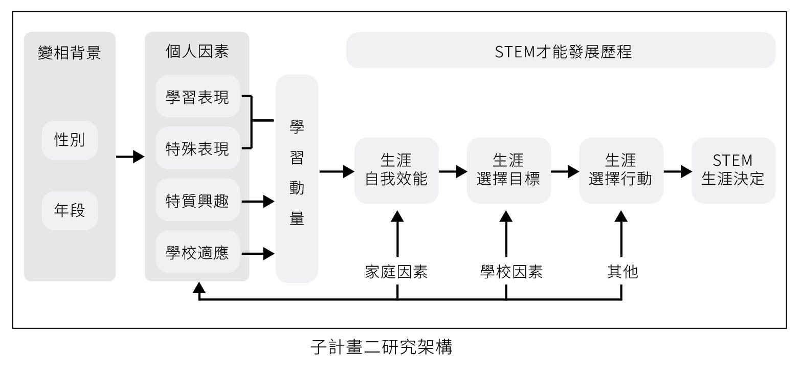

研究架構-子計畫二
子計畫二參考社會認知生涯理論（SCCT）解讀對女學生生涯發展可能面對的影響（Lent et al., 2010），對其能力的信念（即自我效能）以及對其行為預期的正面、負面或中性結果（即結果期望）的信念會增加對特定領域的興趣，用以檢視人們如何做出生涯選擇，並在教育和生涯追求上取得成功來解釋生涯發展的動態過程，對解釋資優女生的生涯發展十分適切，並結合學習動量理論，了解資優學生長期累積的學習經驗與軌跡，進而分析其特性以探討其學業學習與生涯成就的達成度，將可作為支持資優女性STEM領域發展之依據。計畫除透過整合型計畫跨計畫之合作與相同的核心問題比較不同學生的學習動量與生涯發展情形，本計畫將追蹤調查數理資優女生之學習、適應，以及其才能與生涯發展軌跡及其影響因素之情形。其中，透過第二至三年抽取特定年級進行數理資優學生的調查並進行性別比較，除探討學生個人的學習現況包含學習表現與學習動量，亦了解學生的學校適應，並透過才能與生涯發展問卷與訪談，連結整體生涯發展過程中學生的自我效能、選擇目標、選擇行動與最後的生涯決定，並探討影響整體發展之影響因素。研究架構如圖。
